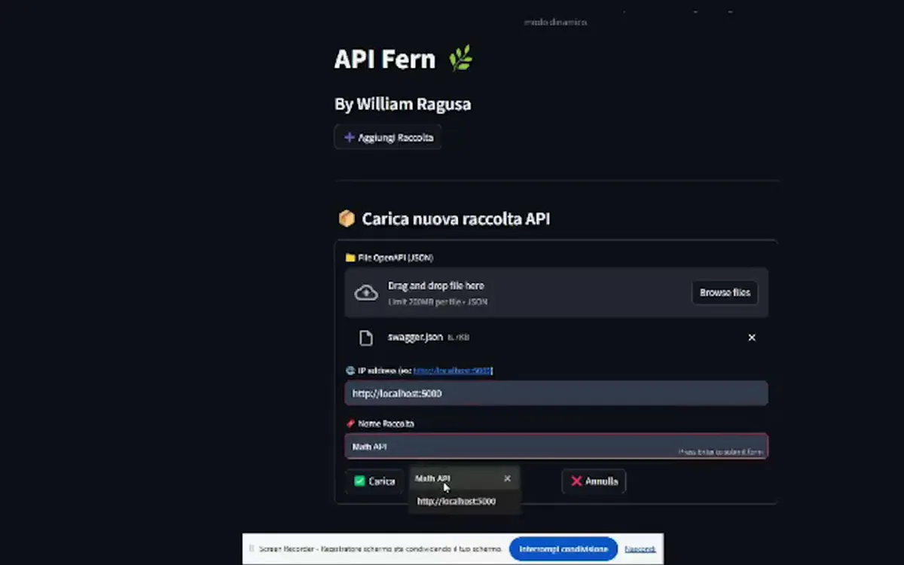
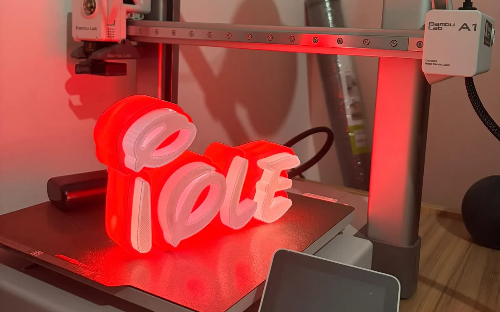
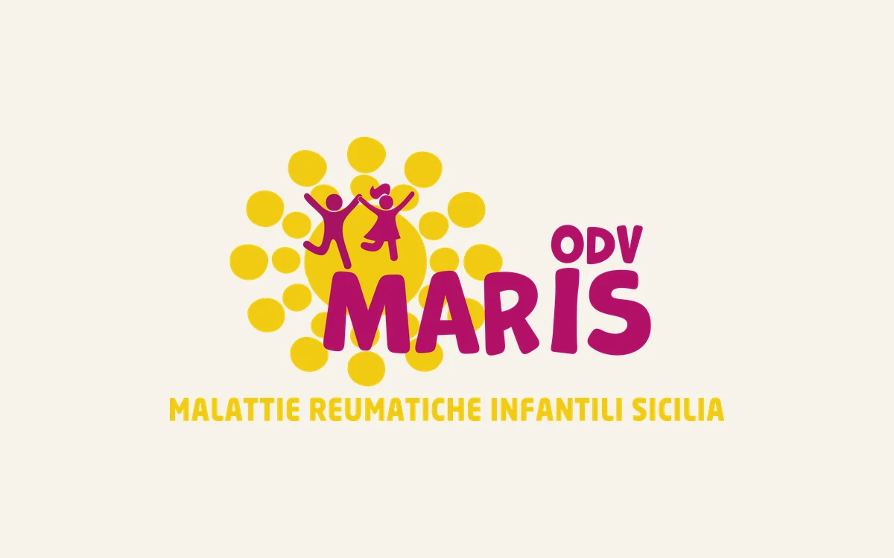
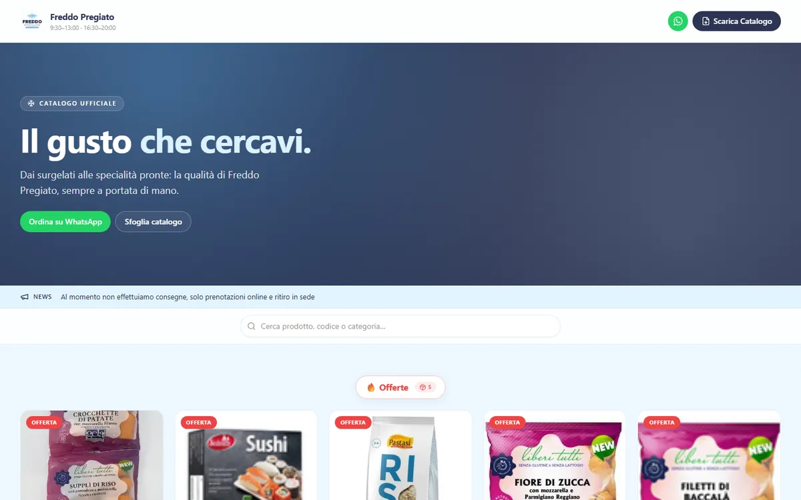
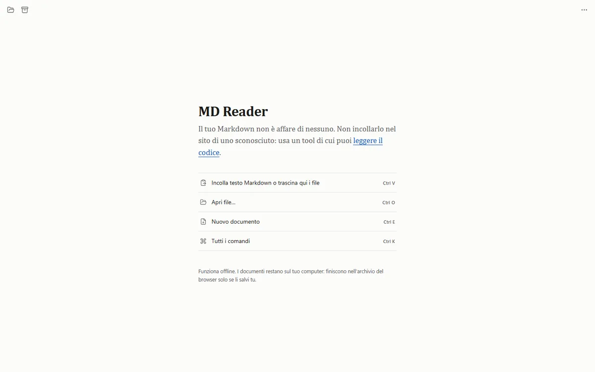
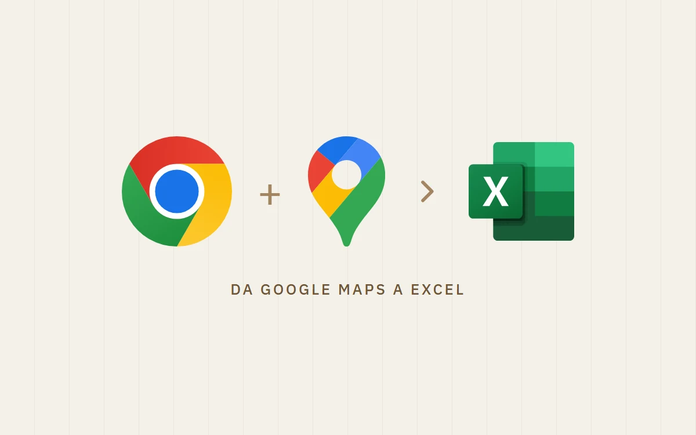
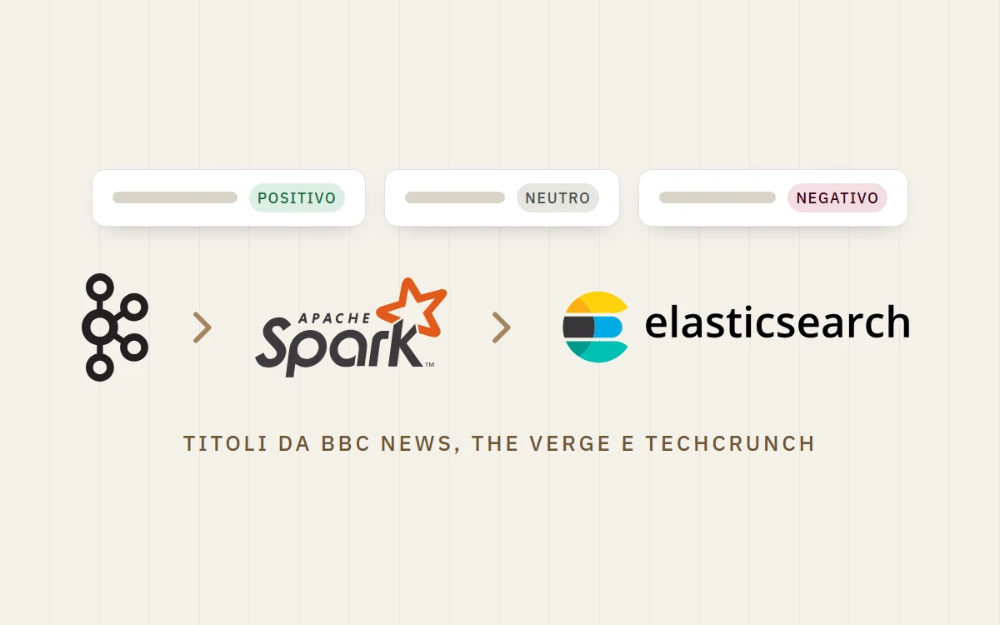
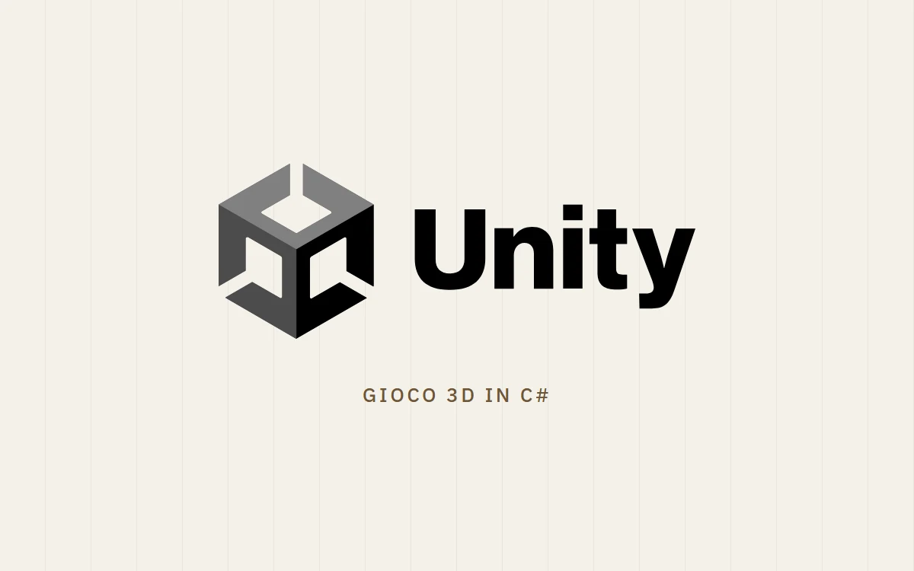

William Ragusa
Sviluppatore full stack · siti, web app e app iOS e Android
Dal 2022 sviluppo software gestionale in Dylog, con .NET, Azure e Angular. In parallelo creo prodotti miei e su commissione, dall’idea alla pubblicazione.
Laurea in Informatica
, 2022
Dipartimento di Matematica e Informatica
,
Università di Catania
Progetti
Alcuni progetti che ho costruito
App mie, siti per clienti, strumenti che uso ogni giorno e i progetti dell’università. Apri un progetto per vedere come funziona e con quali tecnologie l’ho fatto.
-
App web, iOS e Android
Eko
Il calendario della raccolta differenziata del tuo comune, con il promemoria la sera prima e il dizionario «dove lo butto?».
App iOS e Android presto disponibili Codice privato
-
App per imparare l'inglese
Vocablio
Impari l'inglese leggendo libri veri: tocchi una parola e vedi la traduzione, poi la senti pronunciata da un madrelingua.
App iOS e Android presto disponibili Codice privato
-

Assistente AI per le API
Fern
Un chatbot che usa qualsiasi API al posto tuo: carichi la specifica OpenAPI e chiedi quello che ti serve a parole.
Open source
-

Strumento interno · stampa 3D
SignForge
La web app che uso per progettare le insegne LED che stampo in 3D: scrivi il testo e ottieni il modello pronto per la stampa.
Strumento interno Codice privato
-

Sito per un'associazione
MARIS Onlus
Il nuovo sito dell'Associazione Malattie Reumatiche Infantili Sicilia, con tutti gli articoli migrati dal vecchio WordPress. In corso.
In corso Codice privato
-

Sito e catalogo per un cliente
Freddo Pregiato
Il catalogo online di un negozio di surgelati: ricerca, offerte e ordini su WhatsApp.
In produzione Codice privato
-

Lettore Markdown
mdreader
Un lettore ed editor Markdown in una sola pagina HTML: offline, privato, con diagrammi e formule.
Open source
-

Estensione per Chrome
Maps Scraper
Trasforma una ricerca su Google Maps in un foglio Excel di attività commerciali, con telefono, sito e orari.
Codice privato
-

Tesi di laurea · 2022
BioData
La mia tesi: stream processing sui dati dei sensori agricoli, con dashboard e allarmi in tempo reale per proteggere le colture.
Tesi di laurea Open source
-

Progetto universitario
SentimenTitle
Analisi del sentiment in tempo reale sui titoli di BBC News, The Verge e TechCrunch, con Kafka e Spark.
Progetto universitario Open source
-

Progetto universitario
Gioco in Unity 3D
Un videogioco 3D realizzato all'università per imparare il game development.
Progetto universitario Open source
Open source o codice privato? Alcuni progetti sono open source e il codice è su GitHub. Altri sono prodotti miei o lavori per clienti, quindi il codice resta privato: nella pagina di ogni progetto trovi comunque com’è fatto, lo stack e le scelte tecniche.
Altri esperimenti, come un sistema di code ordini con Spring Boot e RabbitMQ , sono su github.com/rocketxx .
Lavoriamo insieme
Cosa posso fare per te
Se hai un’attività, un’associazione o un’idea, posso seguire il progetto dall’inizio alla pubblicazione, e anche dopo.
-
01
Siti web
Siti veloci, curati e facili da aggiornare, per attività, professionisti e associazioni.
Per esempio: MARIS Onlus , Freddo Pregiato
-
02
Web app e PWA
Gestionali, cataloghi, prenotazioni e dashboard. Si installano come app e funzionano anche offline.
-
03
App iOS e Android
Una sola base di codice per web, iPhone e Android, con notifiche, widget e pubblicazione sugli store.
-
04
Automazioni su misura
Estensioni per il browser, raccolta e migrazione di dati, integrazioni con API e assistenti AI.
Per esempio: Maps Scraper , Fern
-
Ascolto
Capiamo insieme cosa ti serve davvero, senza gergo tecnico.
-
Sviluppo
Lavoro per versioni intermedie, che puoi provare man mano, non solo alla fine.
-
Online, e dopo
Pubblicazione, dominio e hosting a costi contenuti, spesso nel piano gratuito di Cloudflare. Poi manutenzione.
Per i recruiter
Esperienza e formazione
-
Dal
.NET Software Developer
Dylog Italia , Gruppo Dylog Buffetti. Software gestionali per imprese, professionisti e organizzazioni.
Ho lavorato in due team, su contabilità e bilancio. Sviluppo nuove funzionalità su .NET e Azure e curo la manutenzione dei moduli esistenti, anche di quelli che ho realizzato io. Tra i lavori recenti: una gestione documentale su Azure Storage, le notifiche in tempo reale con Angular e SignalR, creazione e invio Pratiche di bilancio e integrazioni con le API di InfoCamere, l’autenticazione multi-tenant con Keycloak, estensioni del browser basate sull’AI, modulo Prima Nota e fatture elettroniche.
-
In parallelo
Progetti indipendenti e clienti
Eko , Vocablio , MARIS Onlus , Freddo Pregiato
Ideo, sviluppo e pubblico applicazioni in autonomia, dal design al backend. Eko e Vocablio arriveranno presto su iOS e Android e girano su Cloudflare, che ho imparato da autodidatta. Nel tempo libero realizzo prodotti per clienti, dalla raccolta dei requisiti alla messa in produzione.
-
Laurea in Informatica
Dipartimento di Matematica e Informatica , Università di Catania
Tesi: BioData , un sistema di stream processing per proteggere le colture con i sensori agricoli, sviluppato insieme ad AgrosNote: Node.js, Elasticsearch, dashboard e allarmi su Kibana, tutto in Docker. Durante il percorso ho lavorato anche all’analisi del sentiment in streaming con Kafka e Spark ( SentimenTitle ) e a un gioco 3D in Unity .
-
Prima
Diploma all’Istituto Tecnico Industriale (ITI)
Competenze
Con cosa lavoro
Il mio stack principale è quello che uso ogni giorno al lavoro: .NET, C# e Azure. Nei progetti indipendenti uso e sperimento tutto il resto.
Stack principale · in Dylog dal 2022
.NET, C#, Entity Framework e Azure
È il mio lavoro quotidiano: sviluppo e mantengo software gestionale in produzione, per contabilità e bilancio. È qui che ho più esperienza: API in ASP.NET Core, accesso ai dati con Entity Framework, architetture cloud su Azure e notifiche in tempo reale con SignalR, con Angular sul frontend.
Nei progetti indipendenti
- Cloudflare da autodidatta
- Workers, D1, Static Assets, Cron Triggers, WAF e rate limiting. Ci girano Vocablio ed Eko .
- Frontend e mobile
- React, TypeScript, Vite, Capacitor (iOS e Android), PWA
- Backend
- Node.js, Hono, Express, Python, Flask, Java, Spring Boot
- Dati e AI
- SQLite, Elasticsearch, Kibana, Kafka, Spark, LangChain, Ollama
- Altro
- Docker, RabbitMQ, estensioni per Chrome, OpenSCAD, Arduino, Unity
Fuori dal codice
Quando spengo il computer
Stampa 3D
Mi diverto a progettare e stampare pezzi, senza essere un esperto. Da qui è nato SignForge .
Arduino ed elettronica
Costruisco circuiti, piccoli robot e droni.
Volontariato con Damuni Versu
Un’associazione di promozione sociale di Ramacca (CT): solidarietà, cultura ed eventi per la comunità.
Contatti
Contatti
Hai un progetto o una posizione aperta? Scrivimi.
Per un preventivo raccontami in poche righe cosa ti serve: ti dirò come lo farei, in quanto tempo e con quale costo.